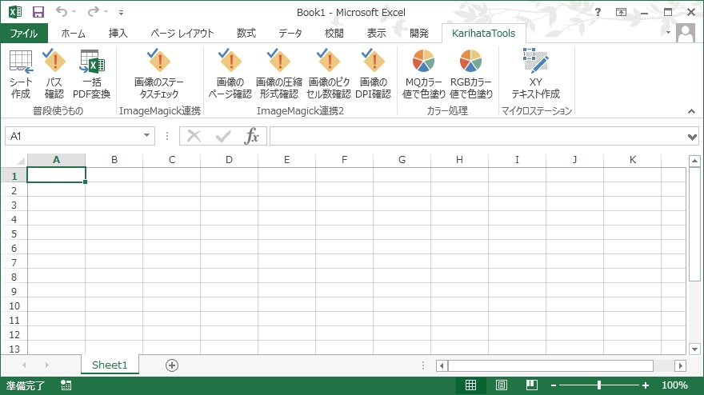

| 過去経歴 使用ソフト・言語・作成データ |
Windows XP～10, WindowsServer2003～2012R2, SQL Server 2012, IIS, Hyper-V, Excel, 固定長txt, csv, tsv 独自カスタムCentOS, Nginx, PHP, Symfony, PhpStorm, MarkDown, Github, Jenkins Windows 10,SQL Server 2017,PowerShell,bat,python,VBScript,VBA,Excel,Access,ImageMagic windows 10, docker, mysql, python2.7, django1.5.1, vscode, AngularJS |
|---|---|
| 保有資格 |
|
| 自分の強み |
データ作成支援ツールの新規開発期間を短くしています。 すぐにサンプルデータが欲しいとの御要望の際に、その場で過去自分が作成したソースコードの流用・改良でツールの開発期間を短縮してテスト期間も抑えるように心がけています。 プライベートで随時ツール改良をして業務の効率化を図っています。 最近はエクセルアドインとしてCAD連携用のデータ作成やWEB用のRGB数値変換等を作成しました。 |
| こだわり | 使い勝手とオリジナリティの比率は3:2 オリジナリティは確立するまでに時間が掛かるので、使い勝手優先で開発期間の短縮を図る。 場数を踏んでオリジナリティを見出していく。 |
